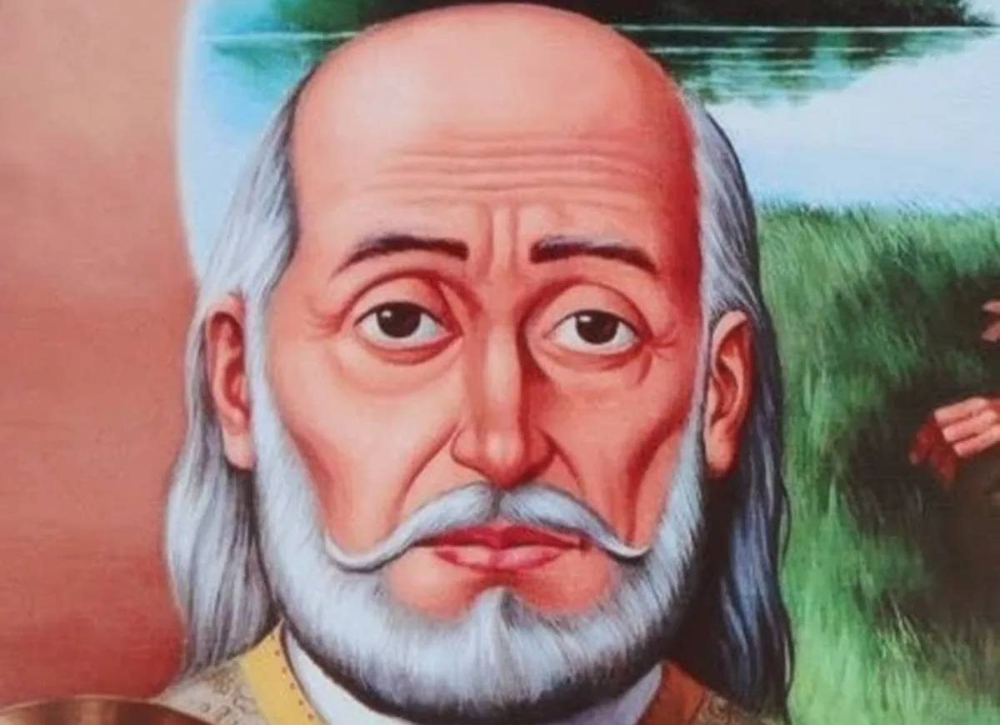

Misionari, pastiri i mistici (Pojedinačna proglašenja)
Biskupijski svećenik · Nekadašnji isusovac · Mučenik
Sv. Andrija de Soveral
† 1645.
Nakon isusovačke priprave nastavio je služiti kao biskupijski svećenik u Brazilu. Kao župnik Cunhaúa predvodio je zajednicu koja je napadnuta tijekom mise; s njezinim je članovima podnio mučeništvo.

Izvor slike
- Spomendan
- 16. srpnja
- Zaštitništvo
- Nije navedeno u izvoru
- Životni vijek
- † 1645.
- Djelovanje
- Misije i evangelizacija · Progoni i progonstvo · Mučeništvo
- Razdoblje
- 16., 17. stoljeće
- Slavi se
- 16. srpnja
Životopis
Sveti Andrija de Soveral rodio se oko 1572. u kapetaniji São Vicente u kolonijalnom Brazilu. Potjecao je iz portugalske sredine, a 1593. stupio je u Družbu Isusovu. Nakon studija i novicijata u Bahiji poslan je u misije na području Rio Grande do Nortea. Godine 1607. napustio je isusovce i nastavio služiti kao biskupijski svećenik.
Najkasnije 1614. bio je župnik u Cunhaúu, naselju blizu Natala koje se razvilo uz proizvodnju šećerne trske. Ondje je godinama predvodio malu kršćansku zajednicu. Njegov život nije sačuvan u mnogim osobnim pojedinostima; izvori ga ponajprije pamte po posljednjem bogoslužju i mučeništvu zajednice kojoj je služio.
Ujutro 16. srpnja 1645. slavio je misu u crkvi Gospe od Svijeća. Nakon posvete u crkvu su provalili nizozemski vojnici i njihovi domorodački saveznici. Vrata su zatvorena, a okupljeni vjernici napadnuti. Andrija je ubijen zajedno sa župljanima, prema predaji moleći molitve za umiruće.
Izvori različito broje žrtve jer ne govore uvijek o istoj skupini. Za pokolj u Cunhaúu najčešće se navodi 69 ubijenih, od kojih je uz Andriju poimence poznat laik Domingos Carvalho. Stariji hrvatski naslov spominje 65 mučenika, dok skupina kanoniziranih brazilskih protomučenika obuhvaća trideset osoba iz pokolja u Cunhaúu i Uruaçuu. Te brojeve zato ne treba poistovjećivati.
Andrija de Soveral i Domingos Carvalho proglašeni su blaženima 5. ožujka 2000. zajedno s Ambrosiom Franciscom Ferrom, Mateusom Moreirom i drugim mučenicima Natala. Papa Franjo proglasio je 15. listopada 2017. svetima trideset brazilskih protomučenika. Stariji izvori koji Andriju nazivaju blaženim time su zastarjeli.
Svetoga Andriju ne treba miješati s Ambrosiom Franciscom Ferrom, svećenikom ubijenim u Uruaçuu 3. listopada 1645. Obojica pripadaju istoj široj skupini i kanonizirani su zajedno, ali su različite osobe i stradali su u različitim pokoljima. Andrijin osobni spomen s mučenicima iz Cunhaúa vezan je uz 16. srpnja, dok se zajednički spomen brazilskih protomučenika slavi 3. listopada.
Njegov život pokazuje župnika koji je ostao uz zajednicu u času nasilja. Dostupni izvori ne dopuštaju opširan prikaz njegova karaktera ili svakodnevne službe, ali pouzdano čuvaju mjesto, okolnosti i datum smrti. Spomendan svetoga Andrije de Soverala slavi se 16. srpnja.
Pročitaj više na izvornoj stranici ↗